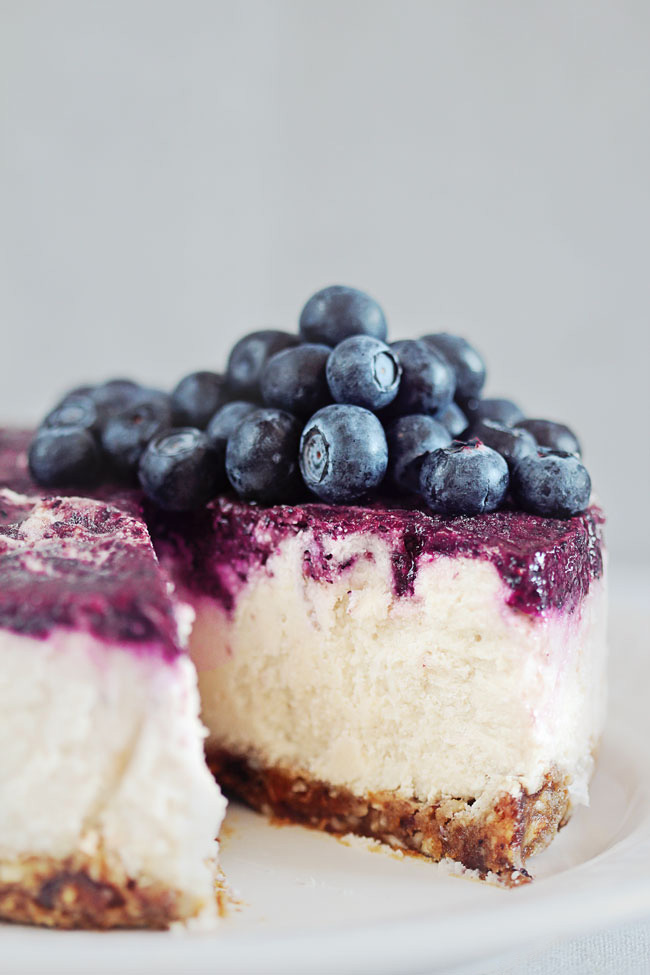

Some of my favorite foods...
Learn to make healthy, yummy, and leaner dishes that taste like the original.
Vegan Tteokbokki Recipe
❤ Tteokbokki, spicy stir-fried rice cakes, is a highly popular Korean street food and a delicious comfort food you can easily make at home. The traditional tteokbokki recipe has fish cakes and melted cheese on top. This is a vegan version of that. ❤
Ingredients
- 2 cups of vegetable broth (or water)
- 1/4 cup gochujang (red pepper) paste
- 1/2 tbsp Korean red pepper flakes
- 1 tbsp cane sugar
- 1 1/2 cup Korean rice cakes (You can find at an Asian grocery store)
- 3 green onions, cut into slices
- Toasted sesame seeds
- Vegan cheese, such as Daiya Cheddar Style Shreds (optional)
Directions
- Add vegetable broth to a skillet and bring to a boil. Once broth is boiling, add gochujang, red pepper flakes, and granulated sugar. Stir well and add in rice cakes and stir gently. Bring heat down to medium and sprinkle 1/3 of the green onion on top. Gently simmer for 7-10 minutes or until the sauce is thick and shiny. Stir gently every few minutes. Then, add vegan cheese until thoroughly melted.
- To serve, spoon into a bowl and sprinkle with the rest of the scallion and sesame seeds. Enjoy!

Vegetable Dumplings Recipe
Crispy veggie dumplings that you can enjoy with soy sauce and sriracha!
Ingredients
Filling
- 1 Onion
- 3 cloves of Garlic
- 5cm piece of Ginger
- 25 grams of Chives
- 1 Carrot
- 1/2 Napa cabbage
- 400 grams of Mushrooms
- 4 tablespoons of Soy sauce
- 1 1/2 tablespoon of Sesame oil
- 2 to 3 tablespoons of Corn starch
- 1 package of Gyoza wrappers
- Salt
- Oil
- 100 ml Warm water
- Water
Wrapper
Directions
THE VEGETABLES
- Onion: Peel and finely dice. Put in a large bowl.
- Garlic: Peel and finely chop. Put in the large bowl as well.
- Ginger: Peel and finely chop like the garlic, put in the bowl.
- Chives: Chop and put in the bowl.
- Carrot: Peel and cut off the ends. Cut in half and cut into sticks. Cut into tiny cubes, or just chop with your knife until it's all really small. Put in the bowl.
- Napa cabbage: Thinly slice and then chop. Put in the bowl as well.
- Mushrooms: Chop into the same size as the carrots. Put into the bowl.
GETTING RID OF EXCESS LIQUID
- Now every vegetable is chopped and in the bowl, add a couple of pinches of salt and mix well with your hands. Sqeeze with your hands, and then let the vegetables sit in the bowl for about 15 minutes.
- Get 2 other bowls, you're going to grab a handful of the mixture and squeeze out as much liquid as you can into one of the bowls and then put the squeezed out veggies into the last bowl.
- Repeat with all of the vegetables.
MIX THE FILLING
- Now that you have no excess liquid from the vegetables, you can start to add the soy sauce and the sesame oil. Mix well with a spoon and taste. You may want to add some white pepper but that is optional.
- Add in the corn starch as well, one tablespoon at a time. Overdoing it on the corn starch will result in a dry filling so you want the vegetables to be pretty dry but not too dry. I found that around 2 tablespoons was enough to achieve this.
MAKING THE GYOZA
- First get yourself a bowl of water and a plate lined with baking paper to avoid the gyoza from sticking to the plate.
- Take 1 gyoza wrapper and add 1 tablespoon of filling in the middle. Brush the edge of the wrapper with water.
- There are 2 different ways I usually wrap my gyoza.
TECHNIQUE 1
- Rest the gyoza on your hand and place your index finger between the two edges. Make folds on 1 side of the gyoza, using your thumb, and pressing down so the edges stick together. Watch the video if this is unclear.
TECHNIQUE 2
- After filling the gyoza, push the edges together and fold using your index finger. Again, watch video if this is unclear.
PREPARING
- Heat up a pan on med-high heat with a little oil and place in a couple of gyoza. You're only going to crisp up one side.
- Sear one side for about 3 to 5 minutes or until the bottom is brown and crispy.
- Add the warm water to the pan and immediately cover with a lid. Steam for around 5 minutes.
- After 5 minutes, the water should be (almost) evaporated. Cook uncovered for another couple of minutes to crisp up the bottom again.
(click here for recipe source.)
Raw Vegan Blueberry Cheesecake Recipe
Light, fresh, and delicate, this raw cheesecake melts in your mouth, is packed with vitamins and minerals, and is ready in no time!
Ingredients
- 2 cups raw cashews, soaked overnight
- 1 lemon, juice only
- ½ cup coconut milk (use homemade for the raw version or full fat for the vegan one)
- 2 tbsp organic raw honey (or raw agave nectar for the strict vegans)
- 1 cup blueberries, fresh or frozen
- 1 cup dry pitted dates, soaked overnight
- ½ cup raw almonds
Directions
- Line a round 6" pan with parchment paper and set aside.
- Make the crust first - place the dry pitted dates and almonds in the food processor and pulse to obtain a sticky mixture.
- Spread the mixture into the pan and press it to evenly arrange.
- Drain the cashews and place them in the food processor along with the lemon juice, coconut milk and raw honey.
- Process to obtain a smooth cream.
- Pour the cashew mixture in the pan on top of the crust, and spread evenly.
- Place the blueberries (optional - add a teaspoon of honey or agave nectar) in the food processor and pulse to obtain a puree.
- Top the cheesecake with the puree, cover and freeze for at least 3 hours.
- For serving, let it stay at the room temperature for 15 mins until it can be cut easily.